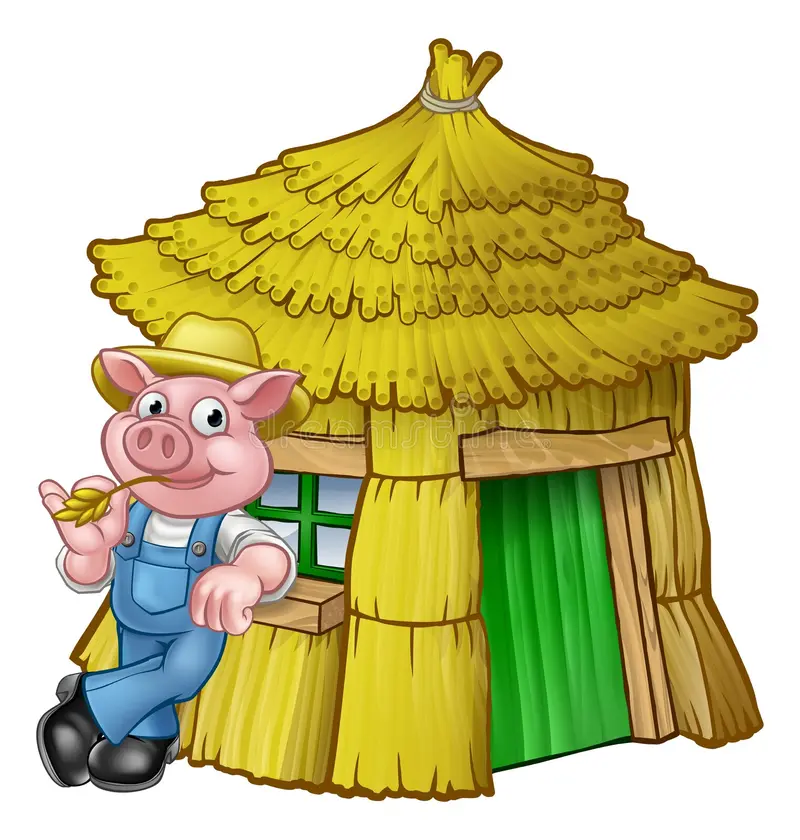
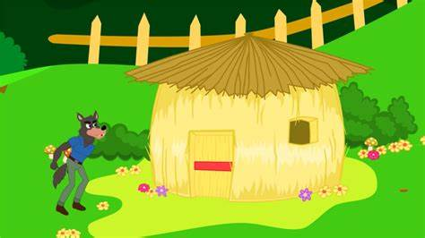
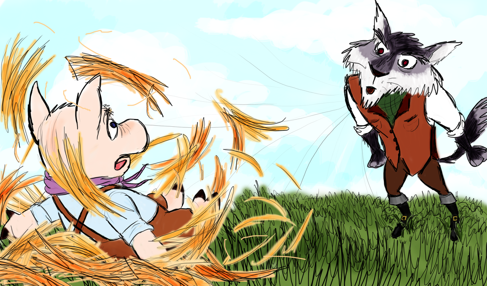
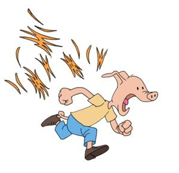

The Straw
The first piglet was very lazy and did not like to work at all, so he decided to create his house out of straw

The piglet quickly built his house, then celebrated. He played, sang, and danced for the rest of the day.
The following day, a wolf stumbled upon the area where the little pigs lived. He saw the straw house and smelled the aromatic scent of the pig, which made his mouth water.

Luckily, the piglet was inside the house. The wolf knocked and said, "Little pig, let me in." The pig saw the wolf's big paws through the keyhole, so he answered, "No! Not by the hairs of my chinny chin chin!"
The wolf, a bit annoyed, said, "Then I'll huff and I'll puff and I'll blow your house down." So the wolf successfully blew the straw house down.
However, before he could enjoy his supper, the piglet swiftly ran away and hid with the second piglet.
